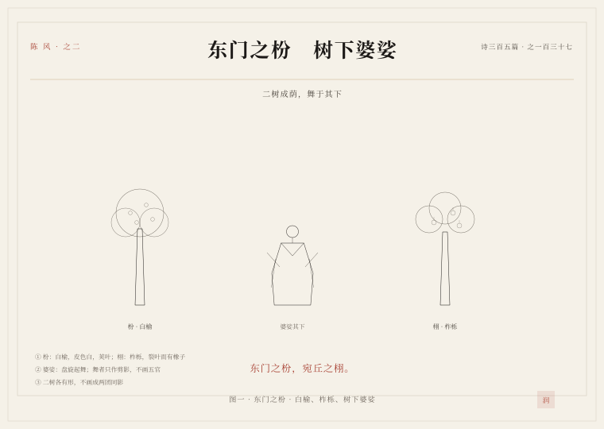
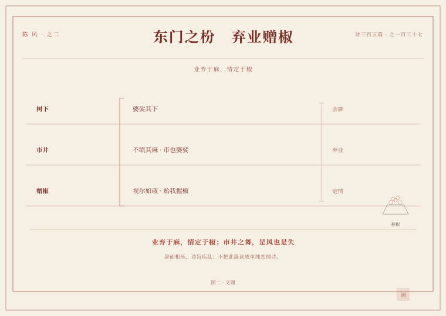

第一百三十七篇 东门之枌
陈风 · 之二 SJ137
朗读 · 普通话
依经文原文朗读，章次不读出；配古琴底乐，不改速、不加拖腔。全库同一音色（豆包 TTS），非播音员录制。
一 解题
诗三判：
- 谁在说：陈国聚会歌舞之男女（诗人赋其事）。子仲之女婆娑于枌栩之下；择良辰会于南方之原，弃其绩麻之业，市井之中起舞；又偕众而行，视其人如荍花，赠一握椒以定情好。
- 说什么事：三章先地（枌、栩）、再业（不绩其麻、市也婆娑）、后赠（视尔如荍、贻我握椒）。歌舞在市井，定情在握椒。
- 为何编在此：紧承
136《宛丘》。前篇刺君上游荡无度，此篇写风化所行、男女弃业会舞；陈风之艳在其地巫风，其失在政——俗化于上，业荒于下，两篇相表里。
《毛序》：“《东门之枌》，疾乱也。幽公淫荒，风化之所行，男女弃其旧业，亟会于道路，歌舞于市井耳。”
朱子《诗集传》：“赋也。枌，白榆也。先生叶却着荚，皮色白。子仲之子，子仲之女也。婆娑，舞貌。此男女聚会歌舞，而赋其事以相乐也。”二章：“赋也。谷，善。差，择也。既差择善旦，以会于南方之原，于是弃其业以舞于市而往会也。”三章：“赋也。逝，往。越，于。鬷，众也。迈，行也。荍，芘芣也，又名荆葵，紫色。椒，芬芳之物也。言又以善旦而往，于是以其众行，而男女相与道其慕悦之诗曰：我视尔颜色之美，如芘芣之华，于是遗我以一握之椒，而交情好也。”
本库的看法：《东门之枌》是一首把「市井婆娑」写进赠椒定情的诗。
毛序归疾幽公淫荒、风化行于下；朱子就辞面说「男女聚会歌舞，赋其事以相乐」。本库两读并存：辞面是聚会相乐，诗旨是疾乱弃业；不把它读成单纯恋情诗，也不把每一句都坐成讽刺。
断语：业弃于麻，情定于椒；市井之舞，是风也是失。
先辨五事：「枌」是白榆，不是粉榆；「栩」是柞栎，不是桑树；「子仲之子」是子仲氏之女，不是男子；「婆娑」是盘旋起舞之貌，不是步态悠闲；「荍」是荆葵（芘芣），不是荞麦。
二 经文
第一章
东门之枌，宛丘之栩。
子仲之子，婆娑其下。
第二章
谷旦于差，南方之原。
不绩其麻，市也婆娑。
第三章
谷旦于逝，越以鬷迈。
视尔如荍，贻我握椒。
分章：三章，章四句。
三 韵读
- 一章：栩、下，鱼部；「下」收，舞于树荫之下。
- 二章：麻、娑，歌部；朱子叶「麻，谟婆反」；「原」不入韵。
- 三章：迈、荍、椒。迈，祭部；荍、椒，幽部，通押。
朱子叶「迈，力制反」。
读法：一章韵在树与下，二章韵在麻与娑，三章韵在行与赠；由地而业而情，一层松一层。
四 字义与名物
- 枌：白榆，先生叶后着荚，皮色白。栩：柞栎。
- 子仲之子：子仲氏之女。毛传或以为子仲之子（男），朱子以为女；本库从朱子女说，以与二章「不绩其麻」、三章「贻我握椒」相属，男说存参。婆娑：盘旋舞貌。
- 谷旦：善旦、良辰。差：择。原：高平之地。绩麻：纺绩麻线。市：市井、市集。
- 逝：往。越：于。鬷：众。迈：行。荍：芘芣，又名荆葵，紫色花。贻：赠。握椒：一握之椒，芬芳之物，赠以定情。
五 今译
东门的白榆，宛丘的柞栎。子仲家的女儿，在树荫下盘旋起舞。
择定良辰，往南方高平之地。不再纺绩麻线，在市集之中起舞。
趁良辰前往，偕众人同行。看你美如荆葵花，赠我一握香椒。
六 章旨
- 一章：写「枌栩」与「婆娑其下」。二树成荫，舞于其下。
- 二章：写「弃业」与「市也婆娑」。麻不绩而舞于市，旧业已荒。
- 三章：写「鬷迈」与「握椒」。众行而往，赠椒定情。
- 总收：一树一地一赠，由树下之舞到市井之舞，再到握椒之赠；风气流贯，弃业之失即在其中。
七 诗教
- 兴：此篇赋也，直陈聚会歌舞；以枌栩之荫起会舞之地，以麻业之废见风俗之弛。
- 观：观陈地巫风怎样落到日常：不绩其麻、市也婆娑、众行赠椒。所写皆细事，所失在旧业与礼节。
- 群：聚会之男女与绩麻之旧业相对；一在市井婆娑，一在机前废业，同是一邑之人。
- 怨：怨不指个人，怨风化；相乐之辞下，藏着「弃其旧业」之疾。
八 分寸与边界
- 不可把此篇读成单纯恋情诗。辞面相乐，诗旨疾乱弃业；一读纯恋，「不绩其麻」之失就被略去。
- 不可把「子仲之子」解作男子。朱子以为子仲氏之女；一读男子，婆娑赠椒之情就错位。
- 不可把「婆娑」当悠闲步态。它是盘旋起舞；一读闲步，市井之舞就成散行。
- 不可把枌、栩画成通用杂木。枌为白榆、栩为柞栎，须各自可指认；画成两团树影即名物不立。
- 不可把握椒画成普通花枝。椒是芬芳定情之物，一握为量；画成插花赠美，定情之义就散。
- 不可把毛序「疾幽公淫荒」逐句坐实到诗中人物。背景在上，辞面在下；一一句句讽刺，相乐之辞就成揭发。
九 存疑
- 诗旨：毛序疾幽公淫荒、风化行于下；朱子赋其事以相乐，不坐君。本库两读并存，相乐为辞面，弃业为诗旨。
- 「子仲之子」：毛传或以为子仲之子（男），朱子以为女；旧说不一。
- 「谷旦于差」：差，择也；一说「谷旦于差」即「于谷旦差」之倒句，句法旧有讨论。
- 「荍」：芘芣、荆葵，紫色；一说即锦葵之类，品类细节不可强断。
- 握椒之赠：是定情信物，还是巫风祀神之椒；旧说两存，诗中无仪式可证。
- 「市也婆娑」：市，市集；一说「市」当为「女」（《潜夫论》引作女），异文存参。
十 跨典
- 《诗经·郑风·溱洧》（SJ095）：“赠之以勺药。”——赠物定情，与此握椒相类；一郑一陈，风土各别，所赠皆微物而交情好。
- 《左传·庄公二十四年》：“男女贽，大者玉帛，小者禽鸟。”——贽礼以微物通情；握椒亦微物之贽。
- 《礼记·郊特牲》：“妇人无公事，纺绩麻枲以事其舅姑。”——妇人旧业在绩麻；「不绩其麻」即弃其旧业。
- 《诗经·陈风·东门之池》（SJ139）：“可以沤麻，彼美淑姬。”——同陈风会遇之词；一咏绩麻之废，一咏沤麻之思，前后相照。
十一 双卡与图
六对：
| 枌（白榆） |
枌（粉榆） |
| 栩（柞栎） |
栩（桑树） |
| 子仲之子（子仲氏女） |
子仲之子（男子） |
| 婆娑（盘旋起舞） |
婆娑（闲步） |
| 荍（荆葵） |
荍（荞麦） |
| 握椒（定情芬芳之物） |
握椒（普通花枝） |

图一 · 东门之枌 白榆、柞栎、树下婆娑

图二 · 东门之枌 弃业会舞、赠椒定情
读图三处：
- 二树：图一白榆（皮色白、荚叶）、柞栎（栎叶坚果）分列左右，婆娑者立树下，只作剪影；树各有形，不画成同影。
- 废业：图二左置麻缕与纺具，旁标「不绩」；机具在而人不在，弃业以空处见。
- 握椒：图二右一握椒实，椒粒可数；椒是赠物，不画成整枝花卉。